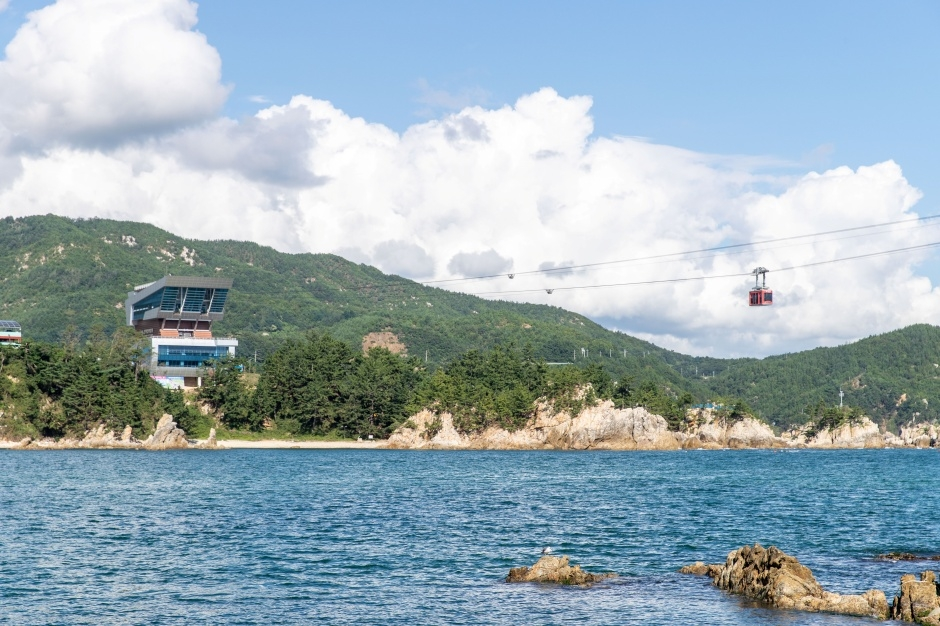
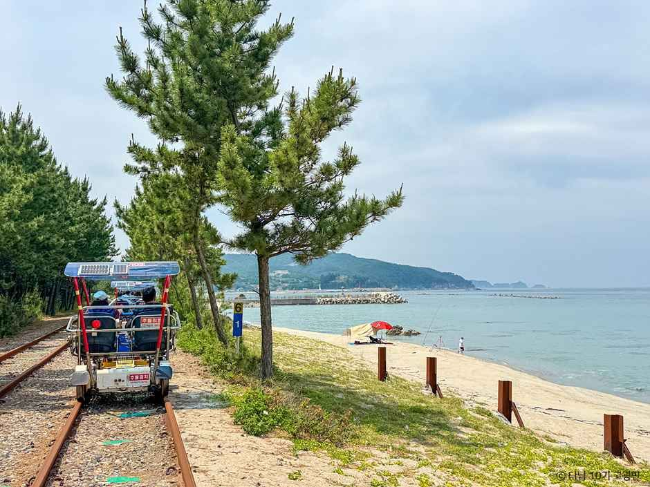
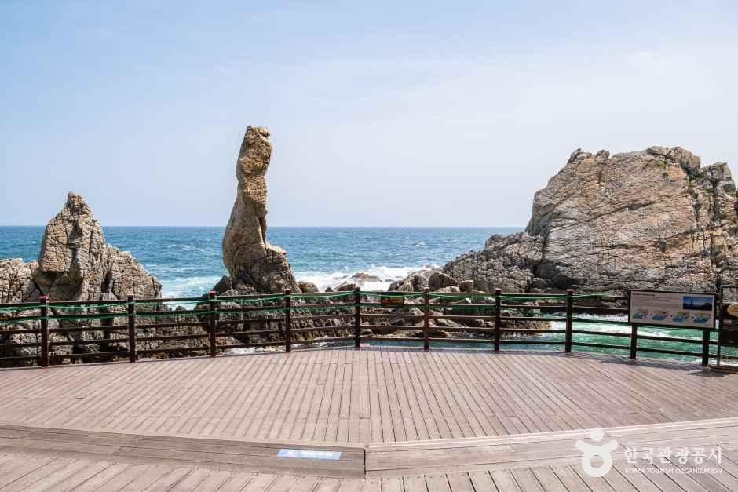
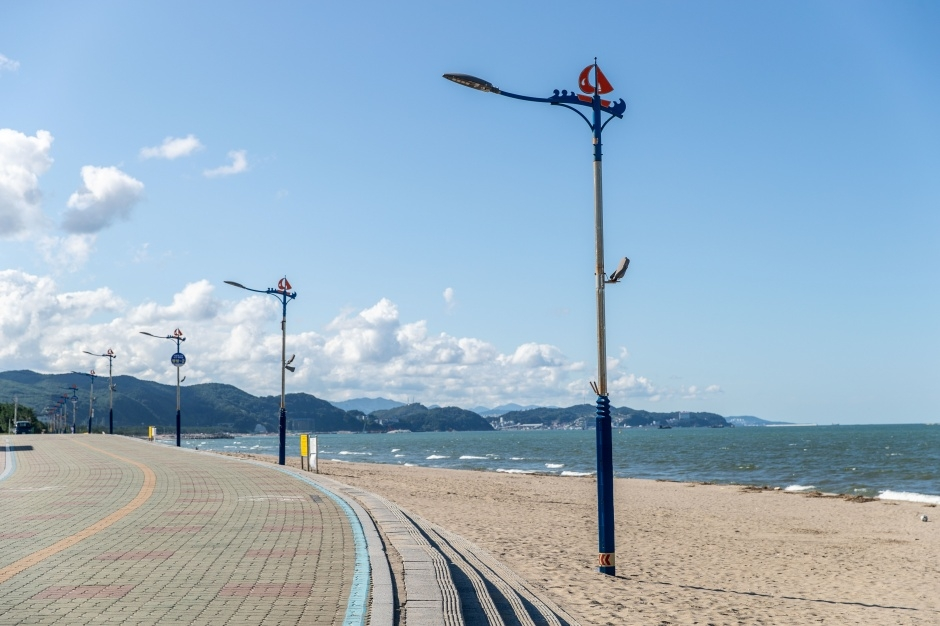
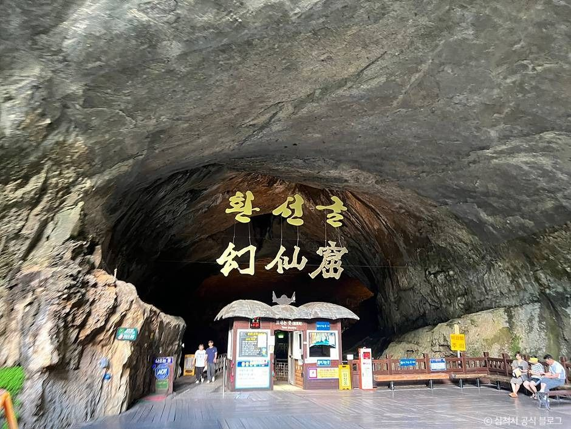
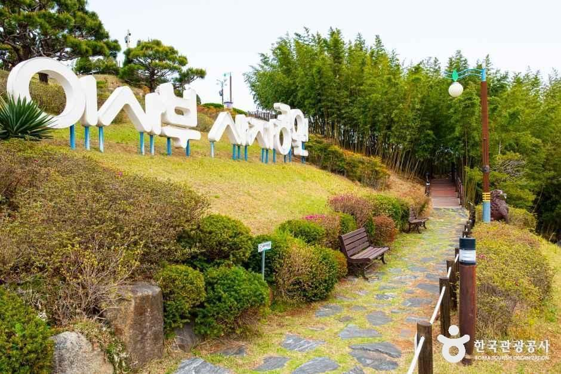

장호항 케이블카
발밑이 투명한 바다 위 케이블카

물이 맑아서 ‘한국의 나폴리’라고 불려.
여름엔 스노클링이랑 투명카누도 할 수 있어.
👇 눌러서 사진 확인
발밑이 투명한 바다 위 케이블카

물이 맑아서 ‘한국의 나폴리’라고 불려.
여름엔 스노클링이랑 투명카누도 할 수 있어.
바닷가 따라 달리는 레일바이크

중간에 조명 터널도 지나가서 생각보다 재밌어.
둘이서 페달 밟기 딱 좋아.
바다 위로 놓인 산책로

출렁다리를 건너면서 기암괴석이랑 파도를 바로 발아래로 볼 수 있어.
길고 넓은 모래사장

봄엔 근처에 유채꽃이 쫙 펴.
BTS 앨범 사진 찍은 곳으로도 유명해졌어.
천연기념물 거대 석회암 동굴

안에 들어가면 다른 행성 같아.
한여름에도 서늘하니까 겉옷 하나 챙겨.
모노레일 타고 들어가는 동굴
환선굴 근처에 있어.
온라인 사전 예약을 해야만 들어갈 수 있어.
절벽 위 누각, 2023년 국보
오십천 절벽 위에 세워진 관동팔경 중 하나.
시내에 있어서 들르기 쉬워.
나무 사자 전설이 담긴 공원

신라 장군 이사부가 나무 사자로 우산국(지금의 울릉도)을 정벌했다는 이야기를 담았어.
전망이 시원해.
항구에서 바로 뜨는 회
회센터에서 그날 잡힌 생선으로 추천받아서 먹는 게 진리.
여름 바닷가 필수 메뉴
살얼음 국물에 회를 듬뿍 넣고, 마지막엔 국수 말아 먹어.
겨울~봄 제철 별미
삼척항 근처 식당에서 먹을 수 있어.
살이 꽉 찬 제철에 가는 게 좋아.
시원한 국물의 겨울 해장국
못생긴 생선 곰치에 묵은지를 넣고 끓인 삼척식 국.
요즘은 곰치가 귀해서 일찍 떨어지기도 해.
알 톡톡 터지는 겨울 생선
동해안 겨울 대표 생선.
찌개나 구이로 먹는데 알이 꽉 차 있어.
강원도 왔으면 한 그릇
메밀면에 시원한 육수나 양념을 곁들인 강원도 대표 면 요리.
회 먹고 입가심으로 딱.
꽃 사진 찍기 제일 좋은 때
맹방 유채꽃이랑 오십천 벚꽃이 펴.
노란 꽃밭 뒤로 바다가 보여.
맑은 바다에 풍덩
장호항 스노클링하고 물회 먹기.
너무 더우면 서늘한 동굴로 피신!
한적하게 돌아다니기 딱
사람 적고 날씨 좋아서 레일바이크나 바다 산책로 다니기 좋아.
일출과 따끈한 제철 음식
곰치국, 대게, 도루묵이 제철이야.
겨울 바다 일출도 끝내줘.
서울에서 출발하면 버스·기차·자동차 모두 3시간 안팎이야.
같이 가는 인원이랑 일정에 맞게 골라봐.
※ 운영시간·요금·예약 여부는 바뀔 수 있으니 출발 전에 꼭 한 번 확인해줘!
서울에서 한 번에, 약 3시간
동서울터미널 등에서 삼척까지 바로 가는 버스가 있어.
갈아탈 필요 없어서 편해.
동해역이나 삼척역으로
동해역은 서울역에서 KTX로 약 2시간 40분, 내려서 버스·택시로 삼척까지.
삼척역은 동해선 KTX-이음·ITX-마음이 서.
여럿이면 제일 편한 방법
바닷가 명소들이 해안도로 따라 흩어져 있어서 차가 있으면 훨씬 자유롭게 다닐 수 있어.